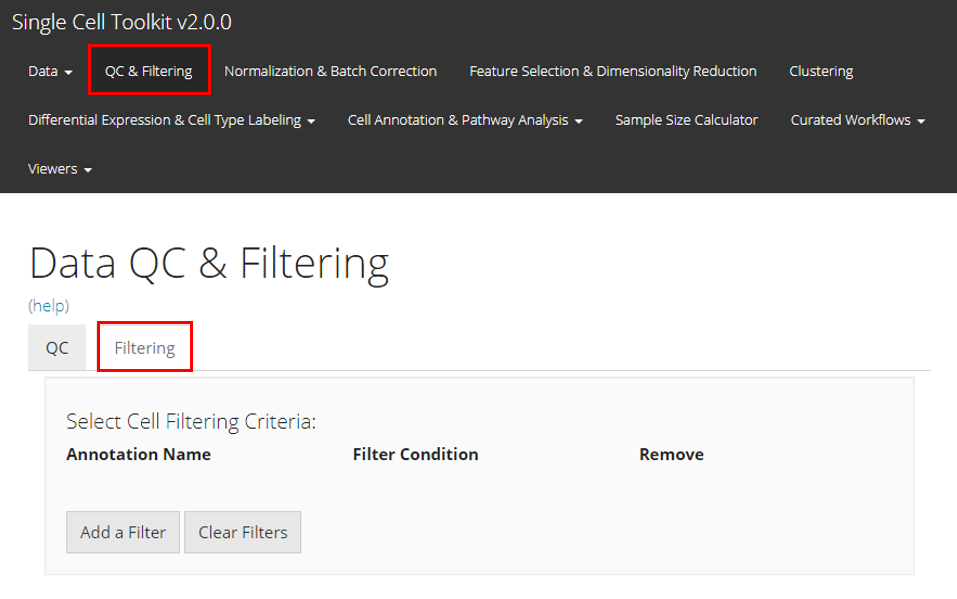
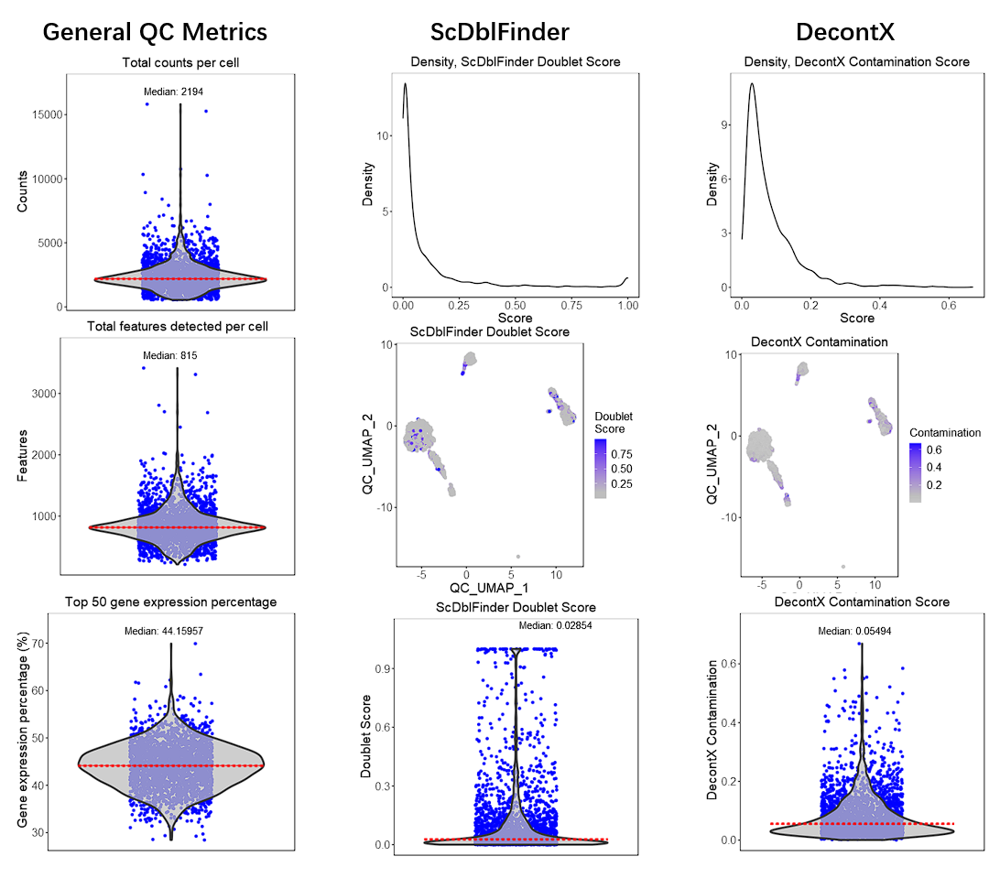
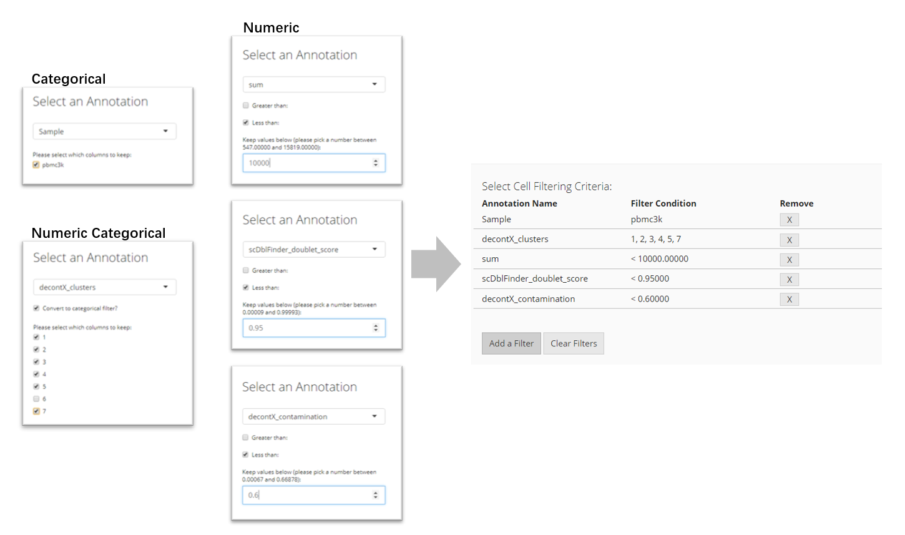

This section of the toolkit allows users to filter their single-cell dataset after running QC metrics or apply subsetting basing on other types of criteria. Users should enter this section as instructed by the screenshot above.

Here we will take the example PBMC3K dataset as an example. We imported this dataset through the “Data” -> “Import Single Cell Data” tab, by selecting “Import example datasets” first and using the default “PBMC 3K (10X)” option then. We next applied three QC methods: General QC metrics, DecontX, and scDblFinder, with all default parameters. Below we will have the plots as generated by SCTK.
Adding Filters for Cells
To filter by cells, users must click the “Add a Filter” button in the “Select Cell Filtering Criteria” panel. A pop-up will appear which asks users to select by which annotation to filter. Based on that selection, more input fields will appear for users to specify how they would like to set the filter.
- If the annotation contains categorical information, mostly presented by text or TRUE/FALSE values, users will have to select which categories to keep;
- If the annotation contains numeric values that might stand for categorical information, users will be asked whether to treat them as categories with a check-box “Convert to categorical filter”. If users check this, users will have to select which categories to keep;
- If users do not want to treat the category-like numeric values in the condition above, or the annotation contains true numeric values, users will have to set a valid range of value to keep. For keeping cells with the value greater than a threshold, check “Greater than” and input the number; for keeping cells with the value less than a threshold, check “Less than” and input the number. Users can also check both threshold for double ended range setting.
After setting each criterion, users have to click on “OK” button to save it to the criterion table. Users can again press “Add a Filter” to add more criteria.

Adding Filters for features
To filter by features, users must click the “Add a Filter” button in the “Select Feature Filtering Criteria” panel. A pop-up will appear which asks users to set the parameters to filter out features. Features are filtered by specifying at least how many counts a gene should be expressed in at least how many cells. Users must first select a expression matrix from the dropdown menu at top of the pop-up. Then, users have to input the numbers in the following numeric fields as explained. To save the the criterion, users must click “OK”.